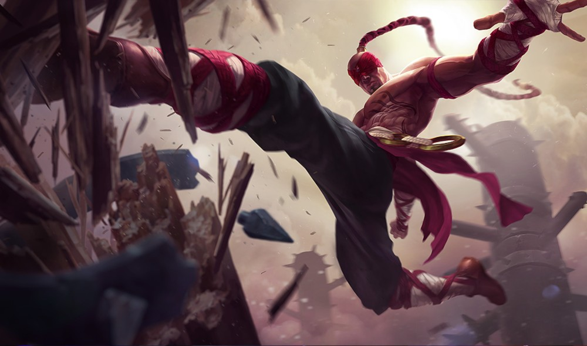

|
Youngjung Kim
Currently I am a Senior Researcher at Agency for Defense Development (ADD), South Korea.
Our team works on developing automatic algorithms for scene understanding, remote sensing, and multi-agent control.
I got my Ph.D. degree in Department of Electrical and Electronic Engineering at Yonsei University in 2018 (supervisor: Prof. Kwanghoon Sohn).
Before that, I obtained my bachelor degree from the Yonsei University in 2013.
Email /
CV /
Google Scholar
|

|
Research Interests
Variational method and continuous optimization Edge-aware filtering, denoising, deblurring, super-resolution, etc. Stereo matching, optical flow, depth refinement, etc. Deep learning for image restoration, segmentation, and representation
|
Experience
Senior Researcher at Agency for Defense Development (ADD), Daejeon, Korea (Sep. 2018 ~ Present) Visiting Scholar at University of Illinois at Urbana-Champaign (UIUC), Urbana, US (Nov. 2017 ~ Feb. 2018) Ph.D. in Electrical and Electronics Engineering,
Yonsei University (DIML), Seoul, Korea (Mar 2013 ~ Aug 2018) Supervised by Prof. Kwanghoon Sohn
B.S. in Electrical and Electronics Engineering,
Yonsei University, Seoul, Korea (Mar 2007 ~ Feb 2012)
|
Publications - Journal
Enriching SAR Ship Detection via Multi-stage Domain Alignment S. Jeong, Y. Kim, S. Kim, and K. Sohn, IEEE Geoscience and Remote Sensing Letters (GRSL), 2021.
Multi-task Learning Framework for Motion Estimation and Dynamic Scene Deblurring H. Jung, Y. Kim, H. Jang, N. Ha, and K. Sohn, IEEE Trans. on Image Processing (TIP), 2021.
A Large RGB-D Dataset for Semi-supervised Monocular Depth Estimation J. Cho, D. Min, Y. Kim, and K. Sohn, Expert Systems with Applications (ESWA), 2021.
EO-augmented Building Segmentation for Airborne SAR Imagery J. Kim, S. Kim, and Y. Kim, IEEE Geoscience and Remote Sensing Letters (GRSL), 2021.
Satellite Image Target Super-resolution with Adversarial Shape Discriminator C. Shin, S. Kim, and Y. Kim, IEEE Geoscience and Remote Sensing Letters (GRSL), 2021.
Coupling Denoising to Detection for SAR Imagery S Shin, Y. Kim, I Hwang, J Kim, and S. Kim, MDPI Applied Sciences (AS), 2021.
Learning Deeply Aggregated Alternating Minimization for General Inverse Problems H. Jung, Y. Kim, D. Min, and K. Sohn, IEEE Trans. on Image Processing (TIP), 2020.
Hierarchical Multi-label Object Detection Framework for Remote Sensing Images S. Shin, S. Kim, Y. Kim, and S. Kim, MDPI Remote Sensing (RS), 2020.
Stacked Lossless Deconvolutional Network for Remote Sensing Image Restoration C. Shin, M. Kim, S. Kim, and Y. Kim, SPIE Journal of Applied Remote Sensing (JARS), 2020.
Unsupervised Deep Image Fusion with Structure Tensor Representations H. Jung, Y. Kim, and K. Sohn, IEEE Trans. on Image Processing (TIP), 2020.
Simultaneous Deep Stereo Matching and Dehazing with Feature Attention T. Song, Y. Kim, C. Oh, and K. Sohn, International Journal of Computer Vision (IJCV), 2020.
Structure-texture Image Decomposition using Deep Variational Priors Y. Kim, B. Ham, Minh N. Do, and K. Sohn, IEEE Trans. on Image Processing (TIP), vol. 28, no. 6, 2019.
Deep Monocular Depth Estimation via Integration of Global and Local Predictions Y. Kim, H. Jung, D. Min, and K. Sohn, IEEE Trans. on Image Processing (TIP), vol. 27, no. 8, 2018.
Fast Domain Decomposition for Global Image Smoothing Y. Kim, D. Min, and K. Sohn, IEEE Trans. on Image Processing (TIP), vol. 26, no. 8, 2017.
Structure Selective Depth Super-resolution for RGB-D Cameras Y. Kim, B. Ham, C. Oh, and K. Sohn, IEEE Trans. on Image Processing (TIP), vol. 25, no. 11, 2016.
Depth Analogy: Data-driven Approach for Single Image Depth Estimation using Gradient Samples S. Choi, D. Min, B. Ham, Y. Kim, C. Oh, and K. Sohn, IEEE Trans. on Image Processing (TIP), vol. 24, no. 12, 2015.
|
Publications - Conference
GuideFormer: Transformers for Image Guided Depth Completion K. Rho, J. Ha, and Y. Kim, IEEE Conf. on Computer Vision and Pattern Recognition (CVPR), 2022.
Stereo-augmented Depth Completion from a Single RGB-LiDAR image K. Choi, S. Jeong, Y. Kim, and K. Sohn, IEEE Conf. on Robotics and Automation (ICRA), 2021.
Memory-guided Unsupervised Image-to-image Translation S. Jeong, Y. Kim, E. Lee, and K. Sohn, IEEE Conf. on Computer Vision and Pattern Recognition (CVPR), 2021.
From PlanetScope to WorldView: Micro-satellite Image Super-resolution with Optimal Transport Distance C. Shin, S. Kim, and Y. Kim, IEEE Conf. on Image Processing (ICIP), 2020.
Stacked Lossless Deconvolutional Network for Remote Sensing Image Super-resolution C. Shin, M. Kim, S. Kim, and Y. Kim, SPIE Remote Sensing, 2019 (Oral).
Deep Network for Simultaneous Stereo Matching and Dehazing T. Song, Y. Kim, C. Oh, and K. Sohn, British Machine Vision Conference (BMVC), 2018 (Oral, acceptance rate 5%, Best Science Paper Honourable Mention).
Multi-task Self-supervised Visual Representation Learning for Monocular Road Segmentation J. Cho, Y. Kim, C. Oh, and K. Sohn, IEEE Conf. on Multiedia and Expo (ICME), 2018 (Oral, acceptance rate 15%).
Deeply Aggregated Alternating Minimization for Image Restoration Y. Kim, H. Jung, D. Min, and K. Sohn, IEEE Conf. on Computer Vision and Pattern Recognition (CVPR), 2017 (Spotlight Presentation, acceptance rate 8%).
Depth Prediction from a Single Image with Conditional Adversarial Networks H. Jung, Y. Kim, D. Min, and K. Sohn, IEEE Conf. on Image Processing (ICIP), 2017.
Automatic 2D-to-3D Conversion using Multi-scale Deep Neural Network J. Lee, H. Jung, Y. Kim, and K. Sohn, IEEE Conf. on Image Processing (ICIP), 2017
Edge-aware Image Smoothing using Commute Time Distance Y. Kim, C. Oh, and K. Sohn, IEEE Conf. on Image Processing (ICIP), 2016.
Depth Extraction from a Single Image based on Block-matching and robust Regression H. Jung, C. Oh, Y. Kim, and K. Sohn, Electronic Imaging (EI), 2016.
A Study on the Effects of RGB-D Database Scale and Quality on Depth Analogy Performance S. Kim, Y. Kim, and K. Sohn, Three-Dimensional Imaging, Visualization, and Display, 2016.
A Majorize-minimize Approach for High-quality Depth Upsampling Y. Kim, S. Choi, C. Oh, and K. Sohn, IEEE Conf. on Image Processing (ICIP), 2015.
Sparse Edit Propagation for High Resolution Image using Support Vector Machines C. Oh, S. Ryu, Y. Kim, and K. Sohn, IEEE Conf. on Image Processing (ICIP), 2015.
Structure-aware Depth Super-resolution using Gaussian Mixture Model S. Kim, Y. Kim, and K. Sohn, Electronic Imaging (EI), 2015.
Data-driven Single Image Depth Estimation using Weighted Median Statistics Y. Kim, S. Choi, and K. Sohn, IEEE Conf. on Image Processing (ICIP), 2014.
Normalized Tone-mapping Operator for Color Quality Improvement in 3DTV D. Kim, K. Jung, B. Ham, Y. Kim, and K. Sohn, IEEE Conf. on Industrial Electronics and Applications (ICIEA), 2014.
|
Activities and Honors
Reviewer of IEEE Trans. on Image Processing Reviewer of IEEE Access Reviewer of Neurocomputing BEST Outstanding Student Fellow, Yonsei University, 2017
|
|
{kind=link}